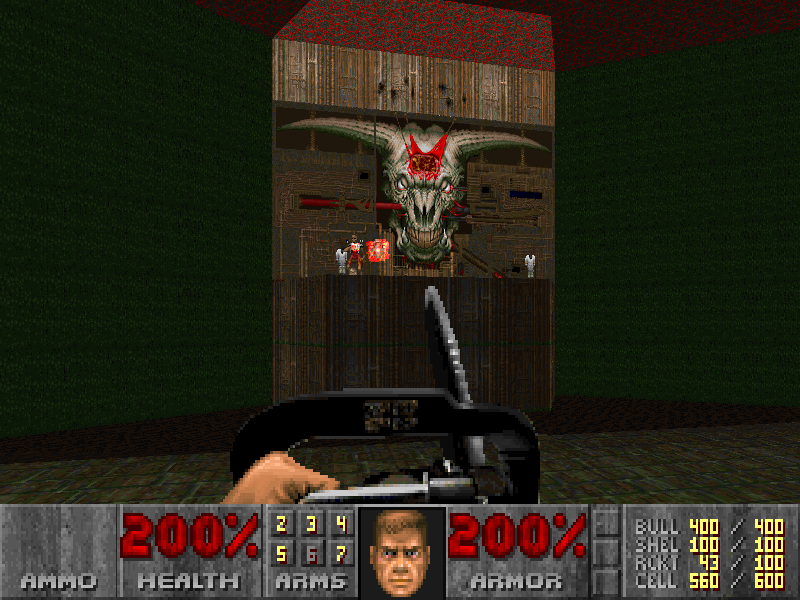

컴퓨터를 괴롭히는 사람들 "컴괴사"
컴괴사는 컴퓨터 하드웨어 주가 되는 곳이며, 여러분이 만들어가는 커뮤니티 입니다.

Created By @cch_in
컴퓨터를 괴롭히는 사람들 "컴괴사"
Created By @cch_in
| 벤치마크 [벤치] 둠 이터널 사양은? 퀘이사존 56종 그래픽카드 벤치마크 작성자 벤치 20-03-13 12:13 조회 974 회 |
|---|
둠 이터널 56종 그래픽카드 벤치마크
안녕하세요. 컴괴사 벤치입니다.
오늘의 게임 벤치마크는 2020년 3월 20일에 출시된 둠 이터널(DOOM Eternal)입니다. 둠 이터널은 둠 리부트(DOOM 2016) 이후 4년 만에 등장한 후속작이자 개발사 이드 소프트웨어가 직접 개발한 새로운 엔진(id Tech 7)과 함께 더 강력해진 액션성으로 화제를 모으고 있는 게임입니다. 또한 콜 오브 듀티로 대표되는 레일슈터 FPS 게임과 정반대의 클래식한 게임성을 고수하고 있어 마니아층이 매우 두터운 게임이기도 합니다. 물론, 그 개성이 매우 강력해 호불호가 갈리기도 하죠. 그러나 둠 시리즈는 존재 자체로 게임 역사상 거대한 영향력을 떨친 프랜차이즈이며, 사실상 FPS의 기틀을 마련한 게임이라는 점에서는 대부분의 사람들이 동의할 것입니다. 특히나 악마들을 찢고 죽이는 고유의 감성을 유지하면서도 여전히 현역으로 인기를 끈다는 점은 놀라운 부분입니다.
시작부터 사심이 듬뿍 담긴 게임 소개로 글을 소개하였는데요. 저 역시 과거 클래식 둠(DOOM, 1993)을 통해 PC 하드웨어에 관심을 가졌던 사람 중 한 명이기 때문입니다. 당시 둠 2의 마지막 스테이지(MAP30 – Icon of Sin)를 플레이하던 중 아이콘 오브 신이 뱉어내던 악마들이 많아지면 많아질수록 제 컴퓨터는 미친 듯이 하드디스크를 읽기 바빴고, 읽기 작업에 심각한 병목현상이 발생하면서 초당 FPS는 무한정 낮아졌습니다. 거의 슬라이드 쇼 수준으로 말이죠. 결국 병목현상으로 인한 버벅임이 두려워 악마들을 더 신속하게 처단하려고 노력했던 나머지 실력 향상은 자연스럽게 이루어졌습니다. 당시 이 버벅임을 해결하기 위해 시스템 메모리(RAM)를 4MB(GB가 아닙니다)에서 8MB로 업그레이드를 했었던 기억이 납니다. 겨우 4MB 증설로 하드디스크는 전과 달리 매우 편안한 구동을 보여줬고, 저 역시 행복하게 악마들을 때려잡았죠. 그리고 깨달았습니다. 쾌적한 PC 게이밍을 위해서는 하드웨어적 지식이 꼭 필요하다는 것을.
▲ 둠 2의 마지막 스테이지 'Icon of Sin' - 4MB 램으로는 버티기 힘들었다
이미지 출처: doomwiki
그리고 둠 이터널의 개발사인 이드 소프트웨어(id Software) 역시 게임뿐만 아니라 하드웨어에 기반한 기술적 성취 나아가 게이밍 경험 측면에서 고유의 철학을 강하게 밀고 나가는 회사입니다. 꽤 오래전 이야기이긴 하지만 둠 3(DOOM 3, 2004)에서 실시간 그림자 렌더링과 저폴리곤 기반에 노말맵을 적극적으로 활용하여 한 차원 높은 시각적 만족도를 전해주고자 노력했고, 현세대에 와서는 PS4, Xbox One 등의 콘솔기기까지 60 FPS 게이밍에 기준을 두어 개발하고 있습니다. 둠 이터널의 진정한 재미를 전달하기 위해서는 부드러운 게임 플레이가 필수라고 판단했기 때문이죠. 이는 둠 시리즈가(둠 3 제외) 밀리터리 기반의 타 FPS와는 확연히 다른 게임성과 속도를 가지고 있다는 것에 기인합니다. 또한 이런 속도감 있는 게임에서는 높은 FPS 수치가 게이밍 경험의 질적 향상에 기여하는 바가 크다는 뜻이기도 합니다.
그렇다면 둠 이터널의 부드러운 게이밍을 위해서는 각 옵션 환경에서 어느 정도의 그래픽카드가 필요할까요? 이 질문에 대한 해답이 바로 여기에 있습니다. NVIDIA 지포스/AMD 라데온 56종 그래픽카드 벤치마크를 통해 본인에게 맞는 설정과 성능을 알아볼 수 있으며, 나아가 둠 이터널을 위한 그래픽카드 업그레이드를 고민하고 계신 분들께 좋은 해답이 되어줄 것입니다.
둠 이터널 게임 소개
▲ 둠 이터널 4K/60fps 공식 론치 트레일러
둠 이터널은 익히 알려진 바와 같이 둠 슬레이어(Doom Slayer, 일명 둠가이)가 되어 쉴 새 없이 밀어닥치는 지옥의 악마들을 처단하는, 즉 찢고 죽이는 그 자체가 목적인 1인칭 슈팅 게임(First Person Shooter, FPS)입니다. 하지만 스토리가 아예 없는 것은 아니며 전작의 경우 문서 형태로 게임의 배경 스토리를 전달하고, 이번 작품은 보다 강화된 스토리텔링 컷신과 배경 설정을 통해 플레이어가 무엇을 위해 싸우는지 알려주기도 합니다.
사실 FPS라는 장르 자체는 대부분의 게이머들에게 매우 익숙하기 때문에 특별하게 느껴지지 않을 수 있겠지만, 둠과 같은 게임은 트렌디한 게임성과는 거리가 있는 하이퍼 FPS 계열 게임으로 초보자라면 적잖이 당황할 수 있습니다. 그도 그럴 것이 현대 FPS 게임에서 당연하게 여겨지는 은폐 엄폐 전술은 둠에서 전혀 필요가 없기 때문입니다. 날아오는 미사일과 악마들의 공격들을 무빙으로 피함과 동시에 대시와 더블 점프로 기동력을 발휘하여 빠르게 악마들을 처단하며 아이템과 탄약을 수급해야 합니다. 즉 공격이 최선의 방어일 수밖에 없는 게임 시스템을 갖고 있습니다. 따라서 밀리터리 FPS 혹은 TPS 게임성에 익숙한 게이머들이라면 적응이 필요한 게임이기도 합니다. 여기에서 취향이 갈리기도 하고요. 그러나 한번 익숙해지면 원초적인 학살 쾌감의 재미를 보장해 주는 게임입니다.